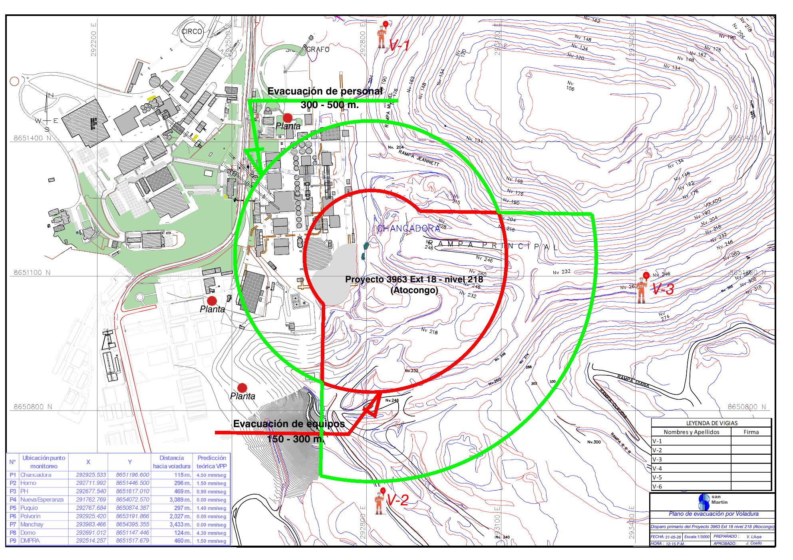

Resultado
Presiona “Activar mi GPS”.
El sistema calculará tu distancia aproximada al punto de voladura.
Datos de la voladura
Fecha-
Hora-
Radio equipos-
Radio personal-
Los datos no son modificables desde esta vista. Solo el responsable debe generar el enlace desde el panel de carga.
Mapa GPS y radios
Radio equipos / exclusión
Radio personal
Mi ubicación
Plano de referencia

Nota: Esta versión piloto es referencial. Para uso operativo debe validarse con Topografía/GIS y el procedimiento oficial de voladura.